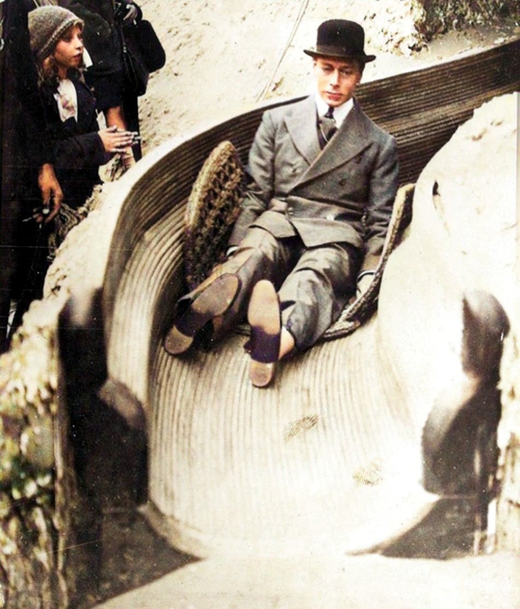

그는 화려한 스포트라이트를 받는 것을 두려워하는 내성적인 차남이었습니다.
본래 왕이 될 운명이 아니었기에 가족들은 그가 조용한 삶을 살 수 있을 것이라 믿었습니다.
그러나 형인 에드워드 8세가 사랑을 위해 왕위를 포기하는 사상 초유의 사건(세기의 로맨스)이 벌어지며
동생이었던 그가 갑작스럽게 왕위에 오르게 됩니다.
말더듬이를 극복한 용기
심한 말더듬이 증상이 있었습니다. 라디오 방송이 중요해지던 시대에 대중 연설은 그에게 큰 고통이었지만,
언어 치료사의 도움을 받아 이를 극복해 나갔습니다. 이 과정이 바로 영화 '킹스 스피치'의 핵심 내용입니다.
"이제야 이웃들(런던 시민들)의 얼굴을 똑바로 볼 수 있겠다."
- 폭격당한 버킹엄 궁전을 바라보며
제2차 세계대전의 정신적 지주
제2차 세계대전 당시 런던이 독일군의 폭격을 받을 때도 피난을 가지 않고
버킹엄 궁전에 남아 국민들과 고통을 함께했습니다.
매주 라디오 연설을 통해 국민들에게 용기를 북돋워 주며 승리의 정신적 지주 역할을 했습니다.
엘리자베스 2세의 아버지
고(故) 엘리자베스 2세 여왕의 아버지입니다. 1925년 웸블리 전시회에서
미끄럼틀을 타던 천진난만한 청년은, 훗날 56세의 나이로 서거할 때까지
영국을 지탱하는 가장 거대한 기둥이 되었습니다.

Wembley Exhibition, 1925